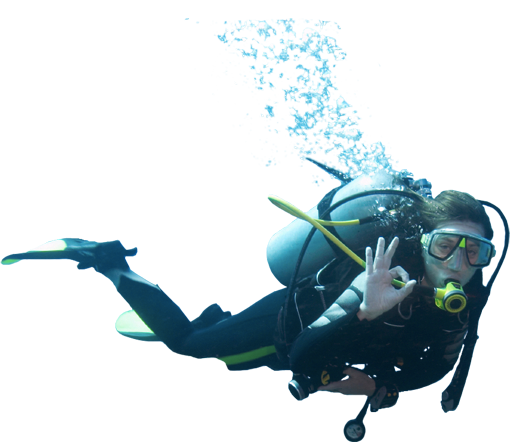

01- The Capitan of the boat has the authority to deny the Diving of any member regarthes if the mementer has a license, also the customer will attend and obey all commands issued by the capitan while the boat is at sea, all commands of the capitan must be follow, fail to do so will result in a fine in your creditcard, if you have a complain you can do after the boat gets to port.
02- You must purchate your license before get in the boat, after getting on the boat if there is no license purchased you will not be allow to Dive, Licenses can not be modify on the boat, you can not upgrade or downgrade your license on the boat.
03- Morning Catch is allow between 2:00 am and 5:00 am local time, during this time you can catch as may octopus as you want, during this time you will not be provided with any equipment, guide, or protection, all accidents happen at sea during this time will be complete responsability of the person who doe it, any expenses resut in help and rescue will be charge to the customer.
04- You must report to the Capitan or any other member of the staff if you notice any thing that enjure any member of the expedition, extrange activity, or any thing that can damage the boat.
05- If yo catch more that the number allowed by your license you will get a heavy fine by the marine conservation state.
06- Always practice safety
Diving Disclosure information
I understand that diving with compressed air involves certain inherent risks; including but not limited to decompression sickness, embolism or
other hyperbaric/air expansion injury that require treatment in a recompression chamber. I further understand that the open water diving trips
which are necessary for this experience may be conducted at a site that is remote, either by time or distance or both, from such a recompression
chamber. I still choose to proceed with such experience dive(s) in spite of the possible absence of a recompression chamber in proximity
to the dive site
In consideration of being allowed to participate in the experience dive(s), I hereby personally assume all risks of this experience, whether foreseen
or unforeseen, that may befall me while I am a participant in this experience.
I further release, exempt and hold harmless said experience and Released Parties from any claim or lawsuit by me, my family, estate, heirs
or assigns, arising out of my enrollment and participation in this experience, including both claims arising during the experience or after I complete
the experience
I understand that past or present medical conditions may be contraindicative to my participation in this experience. I declare that I am in good
mental and physical fitness for diving, and that I am not under the influence of alcohol, nor am I under the influence of any drugs that are contraindicatory
to diving. If I am taking medication, I declare that I have seen a physician and have approval to dive while under the influence of
the mediation/drugs.
HYATT ZIVA - Puerto Vallarta
Luxury Puerto Vallarta All-Inclusive Resort
Hyatt Ziva Puerto Vallarta’s private beach, Las Estacas, is surrounded by cliffs and the sound of waves. The resort features accommodations with ocean views, eleven unique restaurants, bars and lounges plus seasonal opportunities for whale watching. Located less than 30 minutes from Puerto Vallarta International Airport, flying here is a breeze from gateway cities including Los Angeles, Phoenix, Houston and Mexico City.
Here you can enjoy the Octo-Catch adventure, Scuba-Diving to catch Octopus while having a great time with other divers
Caths Octopus with the Best Crew
After you purchase you license, you will be guided and assist by our professional scuba divers in the best techniques to caths the fast moving octopus, while stayin safe.
Remeber this is a life time experience not a life end experience, so dive safe and follow the indications of the personel in charge.
Remember you have you will have 5 Dives of 60 minute each, you will be guided and asisted by the instructor divers, during this dives remember the following intructions:
Never hold your breath
Practice safe ascents
Check your gear
Dive within your limits
Stay physically fit
Plan your dive; dive your plan
Rule of thirds
Use the buddy system
Practice vital skills
Establish positive buoyancy at the surface
The Octopus
Octopuses are one of the most interesting sea creatures. Name octopus is derived from a Greek language and it means eight-footed. There are over 200 species of octopuses and all of them live in oceans around the world, usually near the coral reefs. Octopuses are invertebrates, which mean that they are boneless. Because of that, octopus loses its shape when it is pulled out of the water.
Their color and size is determined by their environment. Those that live in colder water will be much larger than those that live in tropical (warm) water.
Morning Catch

Morning Catch Free Game (at your own risk)
This cath can be done between 2am and 5am, you will have to use your own equpment and, you understand that you are doing so at your own risk.
Meet the Local Octopus
All octopuses have head, called mantle, surrounded with 8 arms, called tentacles. All vital organs are located in their head.
Only hard structure in their body is beak which looks like a parrot beak. They use their beaks for eating.
Using strong suction cups (240 on each tentacle), they hunt crabs, mollusks and crayfish.
Although they are invertebrates, they have incredibly developed nervous system and they can learn various things. Some experiments showed that they can solve puzzles, distinguish shapes and patterns. They can develop both short- and long-term memory.
Othe Octopus
Because of the highly developed nervous system, some people believe that octopuses feel the pain during operation and demand the use of anesthesia before surgery.
Octopuses are mainly famous for their ability to escape predators using various techniques.
They can change their color and texture of the skin to blend with environment and become invisible.
They will eject dark ink that will confuse the predators and give them a chance to escape.
Some octopuses produce very potent toxin that can stun the prey or hurt a man. Most dangerous octopus is blue-ringed octopus that can kill few people at once.